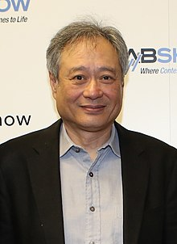
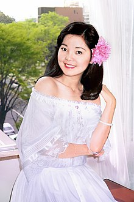
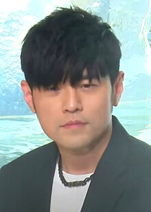
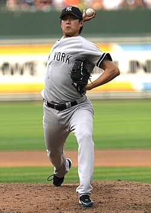
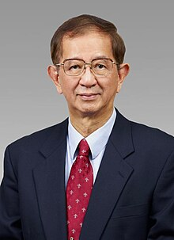
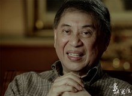

Ang Lee (born October 23, 1954) is a Taiwanese filmmaker. His films are known for their emotional charge and exploration of repressed, hidden emotions. During his career, he has received international critical and popular acclaim and numerous accolades including two Academy Awards, four BAFTA Awards, and three Golden Globe Awards. In 2003, he was ranked 27th in The Guardian's 40 best directors.
Source 1
Teng Li-chun 29 January 1953 – 8 May 1995), commonly known as Teresa Teng, was a Taiwanese singer, actress, musician and philanthropist. Referred to by some as the "Eternal Queen of Asian Pop", she is considered to be one of the most successful and influential Asian popular singers of all time. Teng is recognized as a cultural icon for her contributions to Chinese pop, giving birth to the phrase, "Wherever there are Chinese-speaking people, there is the music of Teresa Teng." A polyglot, Teng's voice and emotionally resonant songs have transcended geographical, linguistic, and political boundaries, captivating audiences across Asia for several decades.
Source 2


Jay Chou Chieh-lun (born 18 January 1979) is a Taiwanese singer-songwriter, actor, director, and businessman.
In 2000, Chou released his debut studio album, Jay (2000), to runaway success, solidified by his second album, Fantasy (2001), which combined Western and East Asian music styles. He has since established himself as one of the most successful singers in the Chinese-speaking world, holding 15 Golden Melody Awards—the most by any singer—and earning the title King of Mandopop.
Source 3
Hou Hsiao-hsien (born 8 April 1947) is a retired Mainland Chinese-born Taiwanese film director, screenwriter, producer and actor. He is a leading figure in world cinema and in Taiwan's New Wave cinema movement. He won the Golden Lion at the Venice Film Festival in 1989 for his film A City of Sadness (1989), and the Best Director award at the Cannes Film Festival in 2015 for The Assassin (2015). Other highly regarded works of his include The Puppetmaster (1993) and Flowers of Shanghai (1998).
Source 4


Chien-Ming Wang (born March 31, 1980) is a Taiwanese former professional baseball pitcher. He played in Major League Baseball for the New York Yankees, Washington Nationals, Toronto Blue Jays and Kansas City Royals. He also played for the Taiwan national baseball team, and is the current assistant pitching coach for CTBC Brothers.
Wang signed as an amateur free agent with the Yankees in 2000. After working his way up the Yankees' minor league system for several seasons, he made his MLB debut in 2005. With his hard sinker, he was one of the best starting pitchers for the Yankees in 2006 and 2007, winning 19 games in both seasons and leading the American League in that category in 2006.
Source 5
Yuan Tseh Lee (born 19 November 1936) is a Taiwanese chemist. He is a professor emeritus at the University of California, Berkeley and honorary director of the Nagoya University Institute for Advanced Study along with Ryoji Noyori. He was the first Taiwanese Nobel Prize laureate who, along with the Hungarian-Canadian John C. Polanyi and American Dudley R. Herschbach, won the Nobel Prize in Chemistry in 1986 "for their contributions to the dynamics of chemical elementary processes".
Source 6


Kenneth Hsien-yung Pai (born July 11, 1937) is a Chinese writer based in Taiwan who has been described as a "melancholy pioneer". He was born in Guilin, Guangxi at the cusp of the Second Sino-Japanese War. Pai's father was the Kuomintang (KMT) general Bai Chongxi, whom he later described as a "stern, Confucian father" with "some soft spots in his heart." Pai was diagnosed with tuberculosis at the age of seven, during which time he would have to live in a separate house from his siblings (of which he would have a total of nine). He lived with his family in Chongqing, Shanghai, and Nanjing before moving to the British-controlled Hong Kong in 1948 as CPC forces turned the tide of the Chinese Civil War.
Source 7